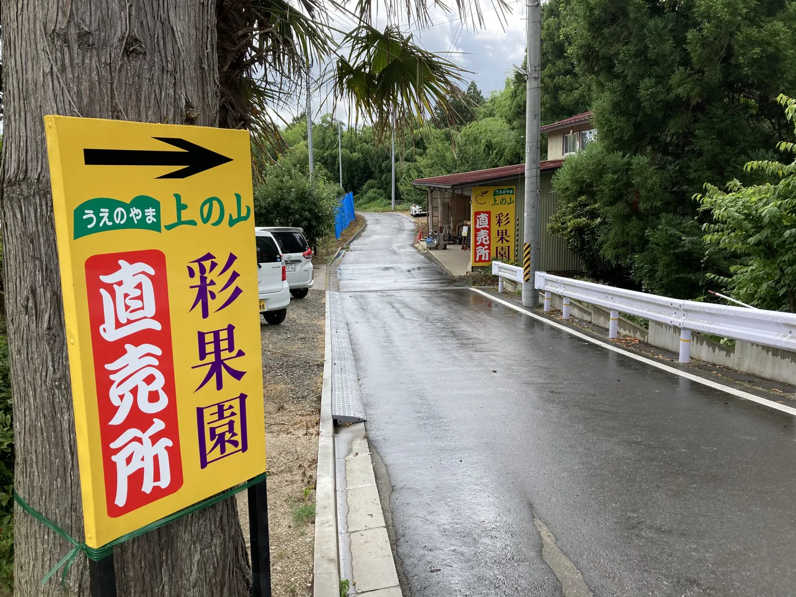

ACCESS — 磐梯熱海より
上の山彩果園への行き方
福島県郡山市、磐梯熱海温泉のほど近く。山あいの一本道を進んだ先に上の山彩果園はあります。地図と道すがらの目印を、ぜひご来園前にご確認ください。
MAP & ROUTE
地図・ご来園方法
住所
〒963-1303 福島県郡山市熱海町玉川字平九郎内10
お車でお越しの方
磐梯熱海ICから約8分。園内に駐車場をご用意しています。山あいの道を進みますので、後述の目印を参考にお進みください。
電車でお越しの方
磐梯熱海駅からタクシーで約7分です。最寄りには「上の山彩果園」バス停もございます。
LANDMARKS
道すがらの目印
カーナビだけでは分かりにくい山あいの道のりです。この看板が見えたら、上の山彩果園はもうすぐです。

直売所へはこの矢印から
道沿いに立つ黄色い案内看板です。矢印の指す方向へ進んでいただくと、直売所に到着します。
道が分からない、道中で迷った時は
お気軽にお電話にてお問い合わせください。